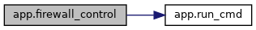
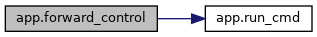
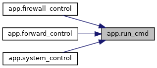
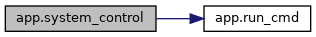

|
Virtual Router Dashboard UPT
Sesiunea Iunie 2026
|
Funcţii | |
| def | run_cmd (cmd) |
| Execută o comandă în terminalul Linux de pe Mașina Virtuală și returnează output-ul standard. Mai mult... | |
| def | index () |
| Randează interfața principală Dashboard. Mai mult... | |
| def | get_stats () |
| Extrage ultimele 15 linii din traffic.log pentru a le trimite live către interfața web. Mai mult... | |
| def | system_control () |
| Controlează starea generală a rutării în sistem. Mai mult... | |
| def | firewall_control () |
| Gestionează politicile de securitate (Firewall) pentru blocarea sau deblocarea unui IP țintă. Mai mult... | |
| def | forward_control () |
| Activează sau dezactivează maparea statică de porturi (DNAT - Port Forwarding). Mai mult... | |
Variabile | |
| app = Flask(__name__) | |
| string | WAN = "enp0s3" |
| Numele interfeței WAN conectată la Internet externo. Mai mult... | |
| string | LAN = "enp0s8" |
| Numele interfeței LAN conectată la rețeaua internă locală. Mai mult... | |
| string | LOG_FILE = "traffic.log" |
| Calea către fișierul de loguri partajat cu motorul C. Mai mult... | |
| host | |
| port | |
| def app.firewall_control | ( | ) |
Gestionează politicile de securitate (Firewall) pentru blocarea sau deblocarea unui IP țintă.

| def app.forward_control | ( | ) |
Activează sau dezactivează maparea statică de porturi (DNAT - Port Forwarding).
Redirecționează portul extern public 8080 de pe interfața WAN către portul 80 intern al clientului 192.168.10.2.

| def app.get_stats | ( | ) |
Extrage ultimele 15 linii din traffic.log pentru a le trimite live către interfața web.
| def app.index | ( | ) |
Randează interfața principală Dashboard.
| def app.run_cmd | ( | cmd | ) |
Execută o comandă în terminalul Linux de pe Mașina Virtuală și returnează output-ul standard.
| cmd | Comanda text ce urmează a fi executată. |

| def app.system_control | ( | ) |
Controlează starea generală a rutării în sistem.
Permite pornirea (activare NAT Masquerade, IP Forwarding și pornirea executabilului C ./router_engine) sau oprirea routerului (ștergere reguli și oprirea forțată a procesului).

| app.app = Flask(__name__) |
| app.host |
| string app.LAN = "enp0s8" |
Numele interfeței LAN conectată la rețeaua internă locală.
| string app.LOG_FILE = "traffic.log" |
Calea către fișierul de loguri partajat cu motorul C.
| app.port |
| string app.WAN = "enp0s3" |
Numele interfeței WAN conectată la Internet externo.